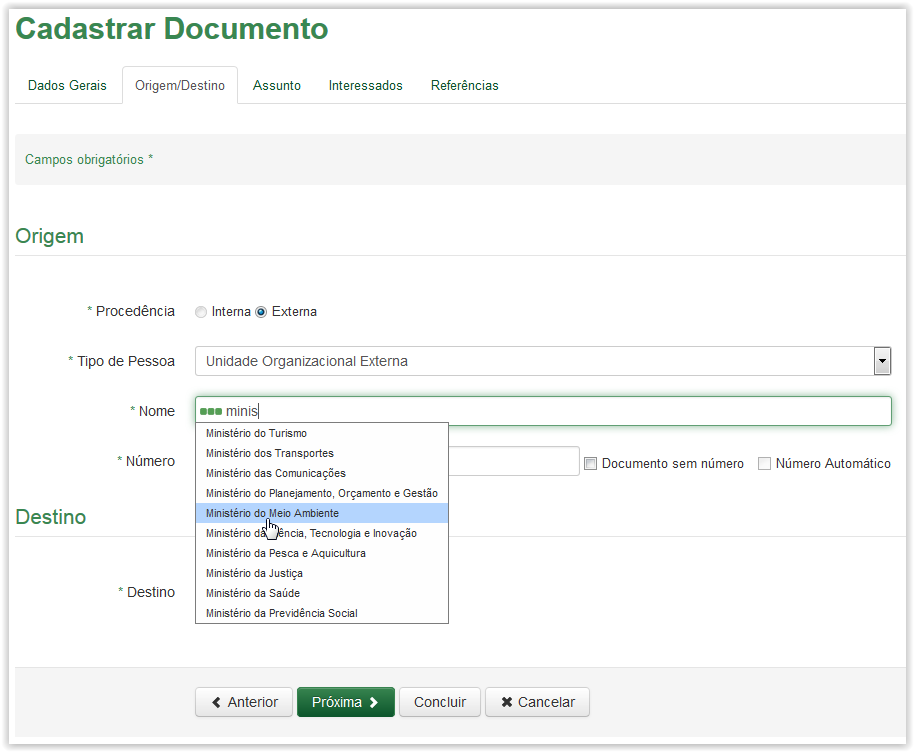
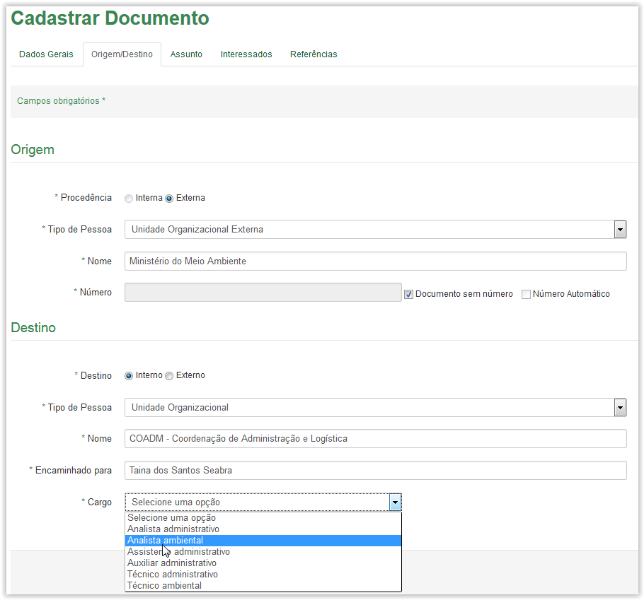
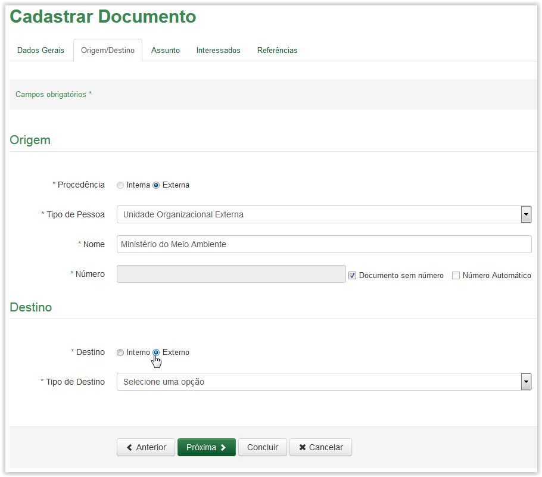
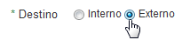
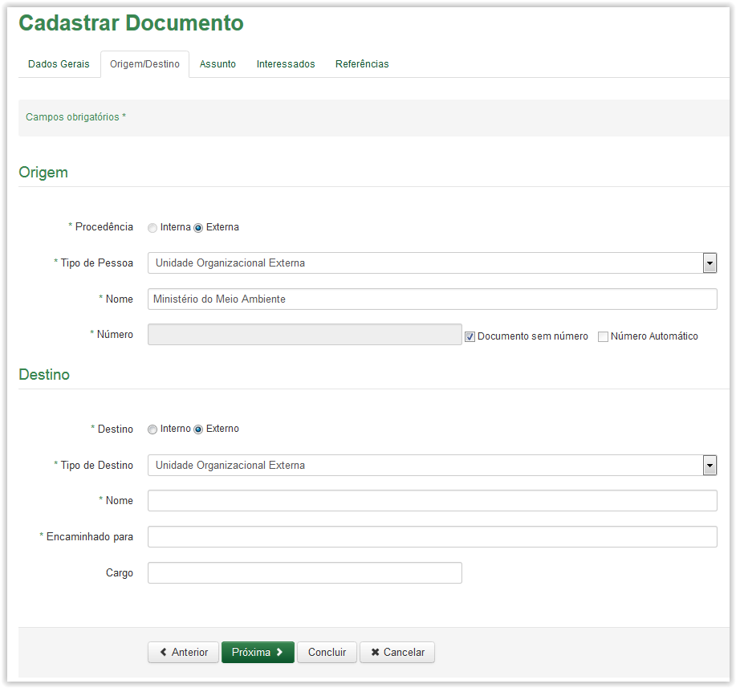

Cadastrar Documento externo
Após preencher a aba Dados Gerais e clicar no botão Próxima, o sistema apresenta a aba Origem/Destino: Observe que alguns campos são obrigatórios (Veja Nota 1):
Cadastrar Documento - Aba Dados Gerais
Informações para cadastro de documento - Aba Origem/Destino:
Origem:
Procedência: |
Procedência do documento a ser cadastrado. |
Tipo de Pessoa: |
Tipo da pessoa de acordo com a procedência do documento. |
Nacionalidade Brasileira: |
Nacionalidade de quem produziu o documento: brasileiro ou estrangeiro. |
Nome: |
Nome da pessoa física ou Organização externa de quem produziu o documento. (dependendo do tipo de origem selecionado). |
CPF: |
CPF da pessoa física de quem origina o documento. |
Nº do Passaporte: |
Número do passaporte da pessoa física estrangeira que originou o documento. |
Número: |
Número que o documento possui. |
Documento sem número: |
Documento que não possui número, deverá ser marcado sem número. |
Número automático: |
Este campo é apresentado desabilitado visto que sua procedência é externa. |
Razão Social: |
Razão social da pessoa jurídica. |
CNPJ: |
CNPJ da pessoa jurídica à que originou o documento. |
 Preenchendo a Origem do cadastro de documento!!
Preenchendo a Origem do cadastro de documento!!
Campo Tipo de Pessoa - Unidade Organizacional
Após selecionar o Tipo de Pessoa como Pessoa Física, o sistema apresenta os campos Nacionalidade Brasileira, Nome, CPF, Número, Documento sem número e Número automático
Após selecionar o Tipo de Pessoa como Pessoa Jurídica, o sistema apresenta os campos Razão Social, CNPJ, Número, Documento sem número e Número automático
Após selecionar o Tipo de Pessoa como Unidade Organizacional Externa, o sistema apresenta os campos Nome, Número, Documento sem número e Número automático
Selecionando a nacionalidade da Pessoa Física
Selecionando um Nome na lista para preencher campo Nome
Observação: Caso o nome procurado não seja apresentado na lista de opções do campo, o sistema apresenta a seguinte mensagem:
Neste caso, utilize o ícone  para efetuar o cadastro dessa pessoa e a partir daí o sistema poderá listá-lo das próximas vezes. (Veja Nota 5):
para efetuar o cadastro dessa pessoa e a partir daí o sistema poderá listá-lo das próximas vezes. (Veja Nota 5):
Ícone Opções para cadastro de pessoa física
Logo após efetuar o cadastro, digite novamente o nome no campo para que ele seja exibido na lista:
Selecionando o nome na lista após ter sido cadastrado
Preenchimento automático do CPF após informado o campo Nome
Observação: Caso o CPF informado não seja de uma pessoa cadastrada, o sistema apresenta a seguinte mensagem:
Mensagem de alerta de CPF não cadastrado
Clique no botão e da mesma forma como foi explicado para o Nome, no caso do CPF também, utilize o ícone  para efetuar o cadastro dessa pessoa e a partir daí o sistema poderá listá-lo das próximas vezes. (Veja Nota 5).
para efetuar o cadastro dessa pessoa e a partir daí o sistema poderá listá-lo das próximas vezes. (Veja Nota 5).
Preenchendo o campo Número ou selecionando a opção Documento sem número
Selecionando um Nome na lista para preencher campo Nome
Observação: Caso o nome procurado não seja apresentado na lista de opções do campo, o sistema apresenta a seguinte mensagem:
Neste caso, utilize o ícone  para efetuar o cadastro dessa pessoa jurídica e a partir daí o sistema poderá listá-lo das próximas vezes. (Veja Nota 7):
para efetuar o cadastro dessa pessoa jurídica e a partir daí o sistema poderá listá-lo das próximas vezes. (Veja Nota 7):
Ícone Opções para cadastro de pessoa jurídica
Logo após efetuar o cadastro, digite novamente o nome no campo para que ele seja exibido na lista:
Selecionando um nome na lista após ter sido cadastrado
Preenchimento automático do CNPJ após informado o campo Nome
Observação: Caso o CNPJ informado não seja de uma pessoa jurídica cadastrada, o sistema apresenta a seguinte mensagem:

Mensagem de alerta de CNPJ não cadastrado
Clique no botão  e da mesma forma como foi explicado para a Razão Social, no caso do CNPJ também, utilize o ícone para efetuar o cadastro dessa pessoa jurídica e a partir daí o sistema poderá listá-la das próximas vezes. (Veja Nota 7).
e da mesma forma como foi explicado para a Razão Social, no caso do CNPJ também, utilize o ícone para efetuar o cadastro dessa pessoa jurídica e a partir daí o sistema poderá listá-la das próximas vezes. (Veja Nota 7).
Preenchendo o campo Número ou selecionando a opção Documento sem número

Selecionando uma Unidade Organizacional Externa na lista para preencher campo Nome
Preenchendo o campo Número ou selecionando a opção Documento sem número
Após preencher os campos sobre a Origem do documento, selecione a opção de Destino do documento: Observe que alguns campos são obrigatórios (Veja Nota 2):
Selecionando o Destino do documento
Informações para cadastro de documento - Aba Origem/Destino:
Destino Interno:
Destino: |
Destino do documento pode ser interno ou externo. |
Tipo de Pessoa: |
Tipo da pessoa de acordo com o destino do documento. |
Nome: |
Nome das unidades internas do ICMBio ou o Nome dos funcionários. |
Encaminhado para: |
À quem se destina o documento. |
Cargo: |
Cargo da pessoa para quem será encaminhado o documento. |
 Preenchendo o Destino Interno do cadastro de documento!!
Preenchendo o Destino Interno do cadastro de documento!!

Selecionando o Tipo de Pessoa
Após selecionar o Tipo de Pessoa como Funcionário, o sistema apresenta os campos Nome e Cargo
Após selecionar o Tipo de Pessoa como Unidade Organizacional, o sistema apresenta os campos Nome, Encaminhado Para e Cargo
Selecionando um nome na lista do campo Nome quando o Tipo de Pessoa é Funcionário
Selecionando um nome na lista do campo Nome quando o Tipo de Pessoa é Unidade Organizacional
Selecionando um nome na lista do campo Encaminhado Para quando o Tipo de Pessoa é Unidade Organizacional

Selecionando um cargo na lista do campo Cargo quando o Tipo de Pessoa é Unidade Organizacional
Selecionando um cargo na lista do campo Cargo quando o Tipo de Pessoa é Funcionário
 para apresentar a próxima aba:
para apresentar a próxima aba:
Aba Origem/Destino - clicando no botão Próxima
Após preencher os campos sobre a Origem do documento, selecione a opção de Destino do documento: Observe que alguns campos são obrigatórios (Veja Nota 3):

Selecionando o Destino do documento
Informações para cadastro de documento - Aba Origem/Destino:
Destino Externo:
Destino: |
Destino do documento a ser cadastrado: interno ou externo. |
Tipo de Destino: |
Tipo de destino do documento: pessoa física, pessoa jurídica ou Unidade Organizacional Externa. |
Nacionalidade Brasileira: |
Nacionalidade a quem se destina o documento: brasileiro ou estrangeiro. |
Nome: |
Nome da pessoa física, jurídica ou Organização Externa à quem se destina o documento. (dependendo do tipo de destino selecionado). |
CPF: |
CPF da pessoa física à quem se destina o documento. |
Nº do Passaporte: |
Número do passaporte da pessoa física estrangeira à quem se destina o documento. |
CNPJ: |
CNPJ da pessoa jurídica à quem se destina o documento. |
Encaminhado para: |
À quem se destina o documento |
Cargo: |
Cargo de quem destina a documentação. |
 Preenchendo o Destino Externo do cadastro de documento!!
Preenchendo o Destino Externo do cadastro de documento!!

Selecionando o Tipo de Destino
Após selecionar o Tipo de Destino como Pessoa Física, o sistema apresenta os campos Nacionalidade Brasileira, Nome, CPF e Cargo
Após selecionar o Tipo de Destino como Pessoa Jurídica, o sistema apresenta os campos Nome, CNPJ, Encaminhado Para e Cargo

Após selecionar o Tipo de Destino como Unidade Organizacional Externa, o sistema apresenta os campos Nome, Encaminhado Para e Cargo
Selecionando a nacionalidade da Pessoa Física
Selecionando um Nome na lista para preencher campo Nome
Observação: Caso o nome procurado não seja apresentado na lista de opções do campo, o sistema apresenta a seguinte mensagem:

Neste caso, utilize o ícone  para efetuar o cadastro dessa pessoa e a partir daí o sistema poderá listá-lo das próximas vezes. (Veja Nota 5):
para efetuar o cadastro dessa pessoa e a partir daí o sistema poderá listá-lo das próximas vezes. (Veja Nota 5):
Ícone Opções para cadastro de pessoa física
Logo após efetuar o cadastro, digite novamente o nome no campo para que ele seja exibido na lista:

Selecionando o nome na lista após ter sido cadastrado

Preenchimento automático do CPF após informado o campo Nome
Observação: Caso o CPF informado não seja de uma pessoa cadastrada, o sistema apresenta a seguinte mensagem:

Mensagem de alerta de CPF não cadastrado
Clique no botão e da mesma forma como foi explicado para o Nome, no caso do CPF também, utilize o ícone para efetuar o cadastro dessa pessoa e a partir daí o sistema poderá listá-lo das próximas vezes. (Veja Nota 5).
para apresentar a próxima aba:Aba Origem/Destino toda preenchida - Destino Externo-Pessoa Física
Selecionando um Nome na lista para preencher campo Nome
Observação: Caso o nome procurado não seja apresentado na lista de opções do campo, o sistema apresenta a seguinte mensagem:

Neste caso, utilize o ícone para efetuar o cadastro dessa pessoa jurídica e a partir daí o sistema poderá listá-lo das próximas vezes. (Veja Nota 7):
Ícone Opções para cadastro de pessoa jurídica
Logo após efetuar o cadastro, digite novamente o nome no campo para que ele seja exibido na lista:
Selecionando o nome na lista após ter sido cadastrado
Preenchimento automático do CNPJ após informado o campo Nome
Observação: Caso o CNPJ informado não seja de uma pessoa jurídica cadastrada, o sistema apresenta a seguinte mensagem:
Mensagem de alerta de CNPJ não cadastrado
Clique no botão e da mesma forma como foi explicado para o Nome, no caso do CNPJ também, utilize o ícone para efetuar o cadastro dessa pessoa jurídica e a partir daí o sistema poderá listá-la das próximas vezes. (Veja Nota 7).
Selecionando o nome na lista do campo Encaminhado Para
para apresentar a próxima aba:Aba Origem/Destino toda preenchida - Destino Externo-Pessoa Jurídica

Selecionando uma Unidade Organizacional Externa na lista para preencher campo Nome
Selecionando o nome na lista do campo Encaminhado Para
para apresentar a próxima aba:Aba Origem/Destino toda preenchida - Destino Externo-Unidade Organizacional Externa
IMPORTANTE!!
 Nota 1:
Nota 1:
Os campos obrigatórios são indicados pelo sinal de asterisco (*) na cor verde ao lado do nome. Quando algum ou nenhum campo obrigatório for preenchido, o sistema apresenta uma mensagem de erro: "Campos de preenchimento obrigatório não foram preenchidos.".
Comportamento da tela de Cadastro de Documento - Aba Origem/Destino, após clicar no botão Próxima sem preencher os campos obrigatórios.
 Nota 2:
Nota 2:
Os campos obrigatórios são indicados pelo sinal de asterisco (*) na cor verde ao lado do nome. Quando algum ou nenhum campo obrigatório for preenchido, o sistema apresenta uma mensagem de erro: "Campos de preenchimento obrigatório não foram preenchidos.".
Comportamento da tela de Cadastro de Documento - Aba Origem/Destino, após clicar no botão Próxima sem preencher os campos obrigatórios do Destino Interno do documento.
 Nota 3:
Nota 3:
Os campos obrigatórios são indicados pelo sinal de asterisco (*) na cor verde ao lado do nome. Quando algum ou nenhum campo obrigatório for preenchido, o sistema apresenta uma mensagem de erro: "Campos de preenchimento obrigatório não foram preenchidos.".
Comportamento da tela de Cadastro de Documento - Aba Origem/Destino, após clicar no botão Próxima sem preencher os campos obrigatórios do Destino Externo do documento.
 Nota 4:
Nota 4:
A única diferença que existe no preenchimento do cadastro quando se tratar de Brasileiro ou Estrangeiro é que na primeira opção, ou seja, ao selecionar Nacionalidade Brasileira como Sim, o sistema apresenta o campo CPF. No entanto, tratando-se da segunda opção, ou seja, ao selecionar Nacionalidade Brasileira como Não, o sistema apresenta o campo Passaporte em vez do campo CPF (veja as imagens abaixo):
Aba Origem:
Selecionando a opção Sim no campo Nacionalidade Brasileira: o campo CPF é apresentado logo abaixo do campo Nome
Selecionando a opção Não no campo Nacionalidade Brasileira: o campo Nº do Passaporte é apresentado logo abaixo do campo Nome
Aba Destino:
Selecionando a opção Sim no campo Nacionalidade Brasileira: o campo CPF é apresentado logo abaixo do campo Nome
Selecionando a opção Não no campo Nacionalidade Brasileira: o campo Nº do Passaporte é apresentado logo abaixo do campo Nome
 Nota 5:
Nota 5:
Para cadastrar uma pessoa física, clique no ícone . Logo após, clique na opção Cadastrar, que será apresentada:
Aba Origem:
Selecionando opção para cadastrar pessoa física
Aba Destino:
Selecionando opção para cadastrar pessoa física
Para ambas as abas, ao clicar na opção Cadastrar:
O sistema exibe uma outra aba no seu navegador com a tela Cadastrar Pessoa Física, por meio da qual devem ser informados os dados solicitados:

Tela Cadastrar Pessoa Física
Finalize o cadastro clicando no botão  . Será apresentada a seguinte mensagem:
. Será apresentada a seguinte mensagem:

Mensagem de sucesso
 Nota 6:
Nota 6:
A mesma situação acontece para estrangeiro, ou seja:
 Nota 7:
Nota 7:
Para cadastrar uma pessoa jurídica, clique no ícone . Logo após, clique na opção Cadastrar, que será apresentada:
Aba Origem:
Selecionando opção para cadastrar pessoa jurídica
Aba Destino:
Selecionando opção para cadastrar pessoa jurídica
Para ambas as abas, ao clicar na opção Cadastrar:
O sistema exibe uma outra aba no seu navegador com a tela Cadastrar Pessoa Jurídica, por meio da qual devem ser informados os dados solicitados:

Tela Cadastrar Pessoa Jurídica
Finalize o cadastro clicando no botão . Será apresentada a seguinte mensagem:
Mensagem de sucesso
Created with the Personal Edition of HelpNDoc: Full-featured EPub generator